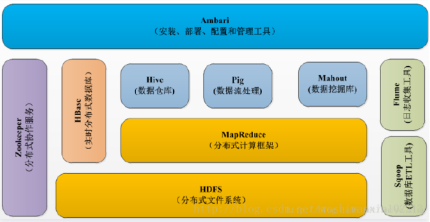
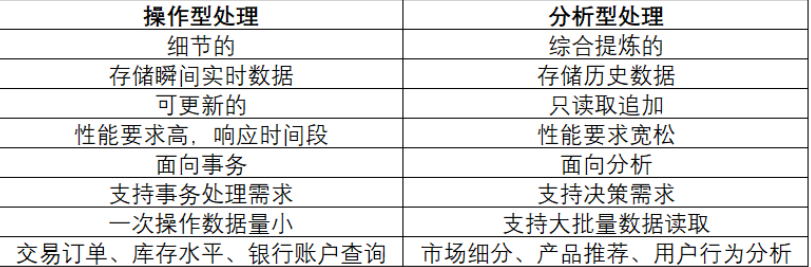

安全数据分析工程师
职位简述：基于海量数据，深入挖掘其中的安全事件，来保护我们的广大用户。
职位要求：
- 良好的信息安全知识素养，对常见的安全概念有较好的理解，了解各类攻击流程;
良好的数据分析能力，熟练掌握至少一种数据分析工具，包括但不限于：SQL、Pandas、Splunk、Spark、Flink等;
熟练掌握至少一种主流数据分析语言，例如 R、Python、Go、Scala或者Java;
积极的学习心态，具备学习新领域知识能力;
加分项：
- 有安全日志分析相关经验，有安全应急处置经验；
对操作系统安全攻防有较深入的研究，有逆向分析的相关能力；
熟练掌握多种数据分析工具，具备较强的大数据分析能力，代码实现能力强；
Hadoop
开源、支持数据密集型分布式应用、以 Apache 2.0 许可协议发布的开源软件框架，利用服务器集群，根据用户的自定义业务逻辑，对海量数据进行分布式处理。
Hadoop组成

HDFS：分布式文件系统
MapReduce：分布式运算框架
YARN：资源调度
HIVE 数据仓库
- Hive是基于Hadoop的一个数据仓库工具，可以将结构化的数据文件映射为一张数据库表，并提供完整的sql查询功能，可以将sql语句转换为MapReduce任务进行运行。
- Hive是建立在 Hadoop 上的数据仓库基础构架。它提供了一系列的工具，可以用来进行数据提取转化加载（ETL），这是一种可以存储、查询和分析存储在 Hadoop 中的大规模数据的机制。
- Hive 定义了简单的类 SQL 查询语言，称为 HQL，它允许熟悉 SQL 的用户查询数据。同时，这个语言也允许熟悉 MapReduce 开发者的开发自定义的 mapper 和 reducer 来处理内建的 mapper 和 reducer 无法完成的复杂的分析工作。
了解一下数据库与数据仓库的区别
实际上就是 OLTP 与 OLAP 的区别
- 操作型处理，叫联机事务处理OLTP（On-Line Transaction Processing），也可以称面向交易的处理系统，它是针对具体业务在数据库联机的日常操作，通常对少数记录进行查询、修改。用户较为关心操作的响应时间、数据的安全性、完整性和并发的支持用户数等问题。传统的数据库作为数据管理的主要手段，主要用于操作型处理。
- 分析型处理，叫联机分析处理OLAP（On-Line Analytical Processing），支持复杂的分析操作，侧重决策支持，并且提供直观易懂的查询结果。
